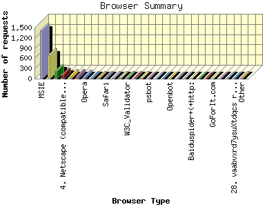
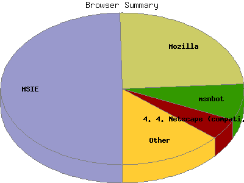

Report generated by Analog 5.91beta1 and Report Magic 2.21
|
Web Server Statistics for "Harish Narayanan (hnarayan) - June 2004" Report generated by Analog 5.91beta1 and Report Magic 2.21 |
The Browser Summary identifies the most popular web browsers used to visit
this site.
Browsers are broken down by recognized categories such as
Netscape Navigator/Communicator, Microsoft Internet Explorer, WebTV, Opera
and the like. Within each category is also a subgroup by version number
such as 'MSIE 5.0' or 'Netscape 4.5'.
This report shows all results. This report is sorted by number of requests.


| Browser Type | Number of requests | Number of bytes transferred | Percentage of the bytes | Percentage of the requests | |
|---|---|---|---|---|---|
| 1. | MSIE | 1,425 | 34.016 MB | 54.35% | 49.70% |
| MSIE/6 | 1,277 | 31.064 MB | 49.63% | 44.54% | |
| MSIE/5 | 148 | 2.952 MB | 4.72% | 5.16% | |
| 2. | Mozilla | 698 | 16.350 MB | 26.12% | 24.35% |
| Mozilla/1 | 694 | 16.030 MB | 25.61% | 24.21% | |
| 3. | msnbot | 223 | 3.315 MB | 5.30% | 7.78% |
| msnbot/0 | 223 | 3.315 MB | 5.30% | 7.78% | |
| 4. | Netscape (compatible) | 126 | 1.512 MB | 2.42% | 4.39% |
| 5. | Netscape | 82 | 843.663 KB | 1.32% | 2.86% |
| Netscape/7 | 74 | 799.273 KB | 1.25% | 2.58% | |
| Netscape/4 | 8 | 44.390 KB | 0.07% | 0.28% | |
| 6. | Googlebot | 81 | 2.264 MB | 3.62% | 2.83% |
| Googlebot/2 | 81 | 2.264 MB | 3.62% | 2.83% | |
| 7. | Opera | 56 | 1.020 MB | 1.63% | 1.95% |
| Opera/7 | 56 | 1.020 MB | 1.63% | 1.95% | |
| 8. | webcollage | 21 | 681.058 KB | 1.06% | 0.73% |
| webcollage/1 | 21 | 681.058 KB | 1.06% | 0.73% | |
| 9. | ia_archiver | 19 | 1.588 MB | 2.54% | 0.66% |
| 10. | Safari | 18 | 516.592 KB | 0.81% | 0.63% |
| Safari/125 | 13 | 79.608 KB | 0.12% | 0.45% | |
| Safari/85 | 5 | 436.983 KB | 0.68% | 0.17% | |
| 11. | Jigsaw | 15 | 57.235 KB | 0.09% | 0.52% |
| Jigsaw/2 | 15 | 57.235 KB | 0.09% | 0.52% | |
| 12. | Yahoo-VerticalCrawler-FormerWebCrawler | 13 | 60.300 KB | 0.09% | 0.45% |
| Yahoo-VerticalCrawler-FormerWebCrawler/3 | 13 | 60.300 KB | 0.09% | 0.45% | |
| 13. | W3C_Validator | 12 | 49.640 KB | 0.08% | 0.42% |
| W3C_Validator/1 | 12 | 49.640 KB | 0.08% | 0.42% | |
| 14. | Uptimebot | 12 | 2.522 KB | 0.00% | 0.42% |
| 15. | deepak-USC | 11 | 101.537 KB | 0.16% | 0.38% |
| deepak-USC/ISI | 11 | 101.537 KB | 0.16% | 0.38% | |
| 16. | psbot | 10 | 50.510 KB | 0.08% | 0.35% |
| psbot/0 | 10 | 50.510 KB | 0.08% | 0.35% | |
| 17. | Konqueror | 8 | 42.357 KB | 0.07% | 0.28% |
| Konqueror/3 | 8 | 42.357 KB | 0.07% | 0.28% | |
| 18. | jBrowser | 6 | 22.846 KB | 0.04% | 0.21% |
| jBrowser/J2ME | 6 | 22.846 KB | 0.04% | 0.21% | |
| 19. | Openbot | 5 | 17.396 KB | 0.03% | 0.17% |
| Openbot/3 | 5 | 17.396 KB | 0.03% | 0.17% | |
| 20. | WEP Search 00 | 3 | 20.562 KB | 0.03% | 0.10% |
| 21. | IlTrovatore-Setaccio | 2 | 7.007 KB | 0.01% | 0.07% |
| IlTrovatore-Setaccio/0 | 1 | 2.522 KB | 0.00% | 0.04% | |
| IlTrovatore-Setaccio/1 | 1 | 4.484 KB | 0.01% | 0.04% | |
| 22. | Baiduspider+(+http: | 2 | 5.068 KB | 0.01% | 0.07% |
| Baiduspider+(+http://www | 2 | 5.068 KB | 0.01% | 0.07% | |
| 23. | IE | 2 | 5.068 KB | 0.01% | 0.07% |
| IE/5 | 2 | 5.068 KB | 0.01% | 0.07% | |
| 24. | sohu-search | 1 | 2.534 KB | 0.00% | 0.04% |
| 25. | GoForIt.com | 1 | 2.522 KB | 0.00% | 0.04% |
| 26. | BlackMask.Net Search Engine | 1 | 2.534 KB | 0.00% | 0.04% |
| 27. | Missigua Locator 1.9 | 1 | 6.860 KB | 0.01% | 0.04% |
| 28. | vaabvxrd7ysuXtdqcs rxml | 1 | 4.510 KB | 0.01% | 0.04% |
| 29. | QuepasaCreep ( crawler@quepasacorp.com ) | 1 | 4.510 KB | 0.01% | 0.04% |
| 30. | ZipppBot | 1 | 2.534 KB | 0.00% | 0.04% |
| ZipppBot/0 | 1 | 2.534 KB | 0.00% | 0.04% | |
| 31. | ObjectsSearch | 1 | 2.522 KB | 0.00% | 0.04% |
| ObjectsSearch/0 | 1 | 2.522 KB | 0.00% | 0.04% | |
| 32. | Openfind data gatherer, Openbot | 1 | 2.522 KB | 0.00% | 0.04% |
| Openfind data gatherer, Openbot/3 | 1 | 2.522 KB | 0.00% | 0.04% | |
| 33. | trexmod | 1 | 2.522 KB | 0.00% | 0.04% |
| 34. | SecretBrowser | 1 | 2.534 KB | 0.00% | 0.04% |
| SecretBrowser/007 | 1 | 2.534 KB | 0.00% | 0.04% | |
| 35. | NutchCVS | 1 | 2.534 KB | 0.00% | 0.04% |
| NutchCVS/0 | 1 | 2.534 KB | 0.00% | 0.04% | |
| 36. | webcollage.perl | 1 | 20.534 KB | 0.03% | 0.04% |
| webcollage.perl/1 | 1 | 20.534 KB | 0.03% | 0.04% | |
| 37. | mozDex | 1 | 2.522 KB | 0.00% | 0.04% |
| mozDex/0 | 1 | 2.522 KB | 0.00% | 0.04% | |
| 38. | ISC Systems iRc Search 2.1 | 1 | 6.860 KB | 0.01% | 0.04% |
| 39. | Mac Finder 1.0.6 | 1 | 6.860 KB | 0.01% | 0.04% |
| 40. | Scooter | 1 | 20.595 KB | 0.03% | 0.04% |
| Scooter/3 | 1 | 20.595 KB | 0.03% | 0.04% | |
This report was generated on August 5, 2004 15:51.
Report time frame June 1, 2004 00:13 to June 30, 2004 23:30.
| Web statistics report produced by: | |
 Analog 5.91beta1 Analog 5.91beta1 |  Report Magic 2.21 Report Magic 2.21 |